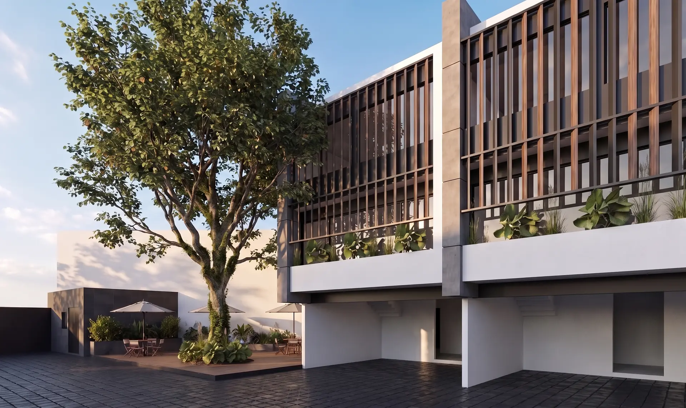
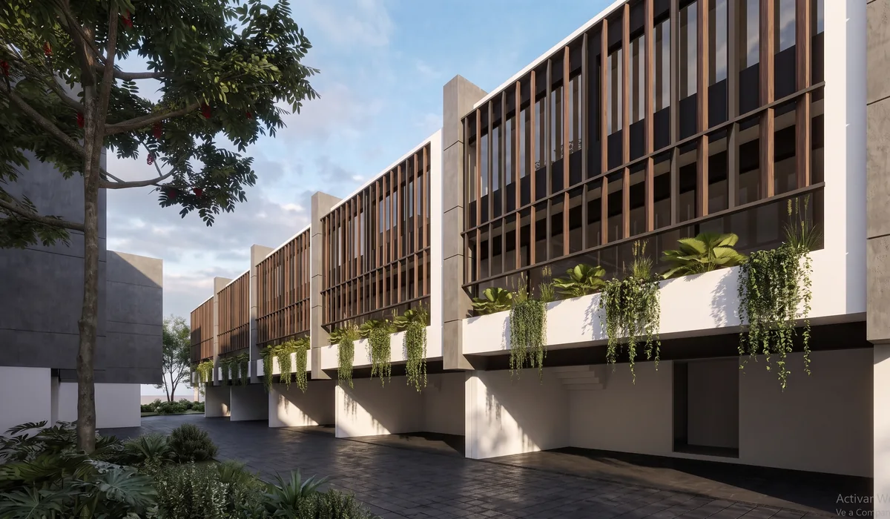
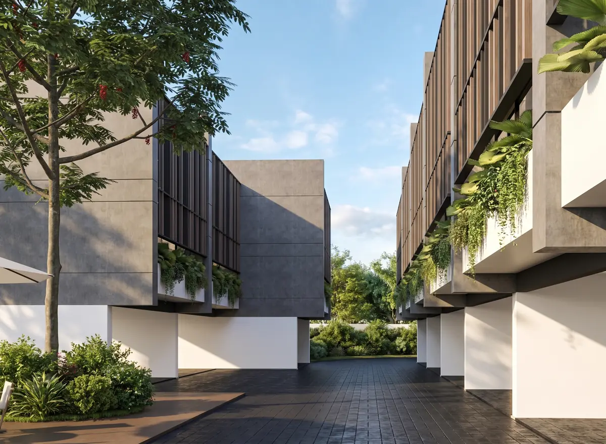
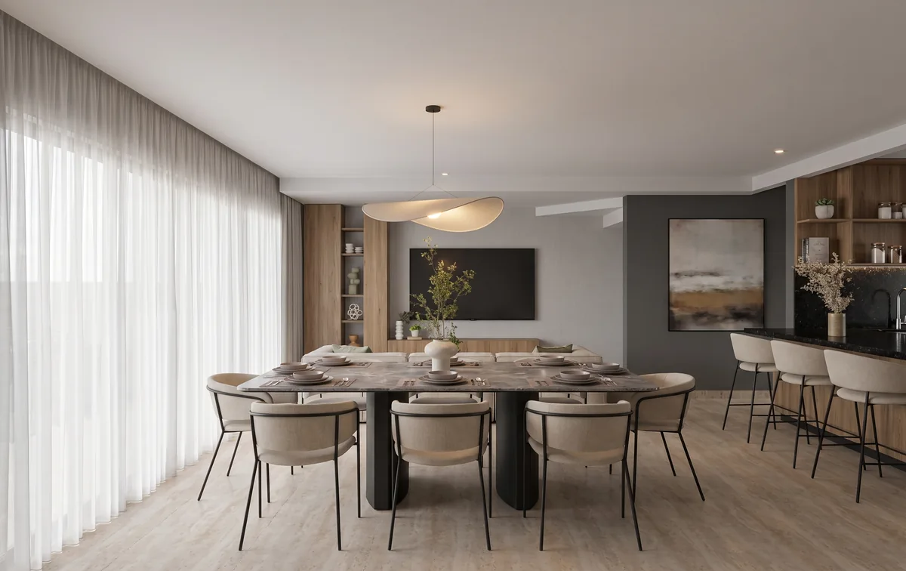
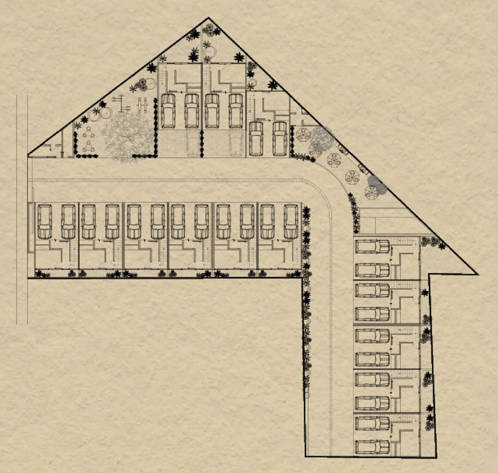

Solara Veracruz · Fraccionamiento privado
Solara City Homes Veracruz, fraccionamiento privado en Veracruz: Tu refugio
en la ciudad.
Un fraccionamiento privado de 14 viviendas, cerca de todo.
Un hogar para disfrutar lo que más importa: la calma de llegar a casa, con la ciudad a unos minutos.
- HogarEspacios para vivir y compartir en familia.
- PrivacidadAcceso controlado y vigilancia 24/7.
- UbicaciónCosta Verde, a minutos de todo.
Bienvenido a Solara
Cerca de todo,
más cerca de los tuyos.
Solara Veracruz
Solara City Homes Veracruz es un fraccionamiento privado de 14 viviendas en Costa Verde. Un lugar donde la conexión con la ciudad convive con la tranquilidad de llegar a casa y disfrutar en familia.


El espacio que haces tuyo
Aquí cabe
tu vida.
La sobremesa que se alarga. Tu rincón favorito. Los pequeños momentos que convierten una casa en hogar.
Espacios para vivir
a tu manera.
Cada vivienda reúne espacios para convivir, descansar y disfrutar de la privacidad de tu propio hogar.
- Sala y comedor
- Cocina integral moderna
- Recámaras confortables
- Jardín privado
- Estacionamiento techado
Planos, precios y disponibilidad, en el folleto.

Privacidad
La tranquilidad también
es parte de tu hogar.
Acceso vehicular con caseta de control, portón de seguridad y vigilancia 24/7.
Tiempo para los tuyos
Lo mejor del día
puede estar en casa.
Un chapuzón, una tarde de juegos o una comida al aire libre. Espacios para disfrutar juntos, dentro de tu comunidad.
Alberca
Parque
Juegos infantiles
Asadores
Recorre cada espacio de Solara en el folleto.
Descargar folletoUbicación y distribución
Tu mundo,
más cerca.
14 viviendas en Costa Verde, Veracruz, a minutos de comercios, universidades, hospitales, deporte y el mar.
Croquis del conjunto
14 viviendas

Ubicación
Calzada Juan Pablo II 1555 B, Costa Verde
Puntos cercanos
Compras y servicios
Plaza Mocambo, Chedraui, Costco, Walmart y SODIMAC.
Salud y educación
DocTowers y Universidad Veracruzana.
Deporte y recreación
Estadios Luis Pirata Fuente y Beto Ávila, clubes de pádel y Club Deportivo Britania.
Frente al mar
Las playas de tu ciudad, para una tarde junto al mar.